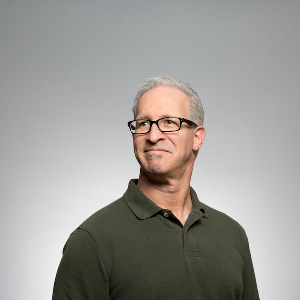

Experience, systems thinking, and a calm approach to operations

Continuum Clinic Ops is a digital operations partner based in Cebu, Philippines. We manage digital systems for clinic owners, doctors, and practice managers so they can focus on patient care.
We are not a web agency that handles one-off projects. We are an operations partner. Clinic operations require ongoing attention, systematic thinking, and reliable execution.
We use systems thinking: understanding how components work together, building solid foundations before adding complexity, and prioritizing reliability over features.
Our approach is methodical. We understand your clinic's specific requirements, prioritize stability and performance, and maintain clear communication throughout.
This is a founder-led operation. You work directly with someone who understands your challenges and is accountable for results. Experience and operational knowledge inform our decisions—we've seen what works and what doesn't.
You work with someone who thinks about operations holistically, prioritizes long-term reliability over short-term gains, and approaches problems with authority and precision.
We structure services as monthly retainers because clinic operations are ongoing. Digital systems require monitoring, maintenance, and continuous improvement. One-time projects do not solve the ongoing challenge of maintaining reliable operations.
Monthly retainers provide predictable costs and systematic work planning. We can implement improvements methodically rather than responding to emergencies. This benefits both parties.
If you require reliable digital operations, systematic thinking, and accountable partnership, we should discuss whether our services are appropriate for your clinic.
Schedule a consultation to discuss your clinic's digital operations requirements.
Book a Consultation